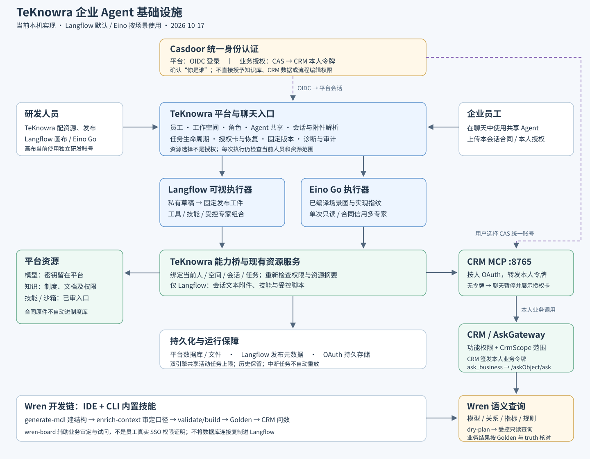

本地离线阅读版 · 2026-10-17 · 原文 README.md · 无外部脚本或在线资源
TeKnowra 双引擎部署操作手册
版本：1.0 · 核实日期：2026-10-17。
本手册面向负责环境安装、配置、维护和恢复的研发及运维。TeKnowra 统一管理身份与资源，Langflow 为默认可视化编排引擎，Eino 为按场景选择的内嵌 Go 引擎。业务开发见研发操作手册。本文保存操作步骤，不执行上线、不生成交付包。
当前本机与隔离环境已有运行、授权和恢复验证；用户已取消干净 Linux 验收，因此不能把以下容器参考方案当成任何新主机均已实测的一键安装器。历史交付包已按用户要求删除，本文不依赖它们。
1. 运行拓扑与部署范围

| 层 | 当前本机 | 容器参考拓扑 |
|---|---|---|
| 前端 | 原生开发服务5173 | 固定前端镜像，经反向代理访问app |
| 平台 | 原生Go后端8080 | app容器；Eino编译在后端内，无单独Eino服务 |
| Langflow | 原生受认证服务7861 | 与app共享network namespace，内部回环7861 |
| 数据 | Docker PG15432、Redis16379 | 专用网络内PG5432、Redis6379，避免占宿主其他项目端口 |
| MCP / CRM | CRM MCP8765、CRM9999 | 独立受控业务服务；按本人OAuth，不共享管理员令牌 |
| Wren / DoWhy | 既有业务网关、独立计算环境 | 经营问数需要时接入；DoWhy位于MCP可访问的计算环境 |
| Casdoor | 既有身份中心 | TeKnowra OIDC与业务CAS分别登记 |
能力桥使用回环地址。不能单把 Langflow URL 改成远端地址，就认为跨机能力桥已完成。容器参考方案使用 network_mode: service:app；替换 app 容器必须连同 Langflow 重建，避免后者留在旧网络命名空间。编辑端口仅绑定宿主回环，由受控隧道或认证网关提供研发访问。
当前是单实例发布状态和进程内执行配额；不要直接把app/Langflow副本数改为多个。编辑与运行服务身份分离，Langflow不挂平台完整env、OAuth存储或Docker socket。
2. 安装前准备与版本记录
2.1 必备清单
| 项目 | 准备内容 |
|---|---|
| 源码 | 平台及MCP各自提交SHA；CRM/Wren若变更也单独记录 |
| 运行版本 | 前端、app、Langflow、PG扩展镜像、Redis、解析服务和沙箱快照的不可变镜像ID或digest |
| 配置 | 数据库、Redis namespace、存储、模型、解析服务、身份、MCP、能力桥和沙箱连接 |
| 数据 | PG、文件/对象存储、Langflow SQLite、固定发布清单及工件、服务身份和OAuth持久数据 |
| 认证 | 原JWT/AES/签名密钥、Langflow secret与普通服务API Key；新装按受控渠道生成 |
| 资源 | 确认内存、CPU、持久盘和备份余量；本机双并发样本不能代替生产容量评估 |
| 域名 | 入口HTTPS、反向代理、OIDC/CAS/OAuth完整回调列表与访问策略 |
配置文件由管理员受控保管；只提交 .example 和占位模板。不得将env、数据库、备份、令牌或私有身份文件提交Git。PG需支持平台所需扩展，不能用任意普通镜像替代。技能脚本依赖对应快照镜像，不能只恢复一行镜像ID记录。
2.2 当前已核实的依赖
本机 Langflow 使用独立 Python3.12.10 环境，分发包是 langflow-base==1.12.5、lfx==1.12.5，不是简单执行 pip install langflow。当前 langchain1.3.2、langchain-core1.6.10、langchain-openai1.7.1、langgraph1.2.2、FastAPI0.143.0、uvicorn0.54.0。MCP使用 FastMCP3.4.6、httpx0.28.1、python-dotenv1.2.2；DoWhy独立环境固定0.14。Wren CLI现有0.14.0。
这些是本机核实版本，不是跨OS通用锁文件。新目标环境应固定源码与经过验证的镜像/依赖锁，不能拿Windows环境整份freeze直接安装Linux。Go版本以 repo/go.mod 及构建日志为准，前端按现有lock安装，Node至少22.13。生产服务器不构建镜像。
每次变更记录：平台/MCP提交、前后端运行版本、镜像ID、数据库schema、依赖锁、配置变更项、固定流程发布ID、备份恢复点和验收结论。不要把文件名或latest标签当作版本证据。
3. 保持本机环境正常运行
本机当前正常启动入口为 D:/TeKnowra/research/upstream-runtime-20261017/start-upstream-local.ps1，调用 launch_local_experts.py。后端候选为 WeKnora-dual-engine-runtime-guards.exe；以进程实际路径和候选清单核对，不能只按历史PID判断。数据库为升级副本、schema122 clean，常态 AUTO_MIGRATE=false。
- 先确认Docker基础设施健康、空间充足；不要启动另一套占同端口的服务。
- 核对现有本机私有配置与候选清单。保留JWT/AES、OAuth与Langflow身份文件，不重新初始化。
- 需要源码开发时用
repo/dev-app.ps1、dev-frontend.ps1，但其默认配置不自动等于当前升级候选配置。先停自己负责的旧进程、确认目标配置，再切换；不要在现有服务旁直接双开。 - Langflow本机入口为
repo/integrations/langflow/run_authenticated_local.py --environment <既有环境目录>，使用该环境已有解释器。复用现有受限身份和SQLite状态，不重跑初始账号生成。 - MCP依照其README用原虚拟环境启动。新增回调先维护确认并重启该服务；不要杀不明端口进程，不修改别的项目。
- 检查8080健康、5173页面、7861认证，再发起一条目标场景新任务。进程起来不等于模型、工具和权限都可用。
旧114数据库及历史消息保留；当前没有执行数据回退。不要全局Docker清理或删除数据库/OAuth持久卷。
4. 新环境配置与容器参考方案
源码入口：repo/integrations/langflow/delivery/README.md、compose.yaml、templates/。该Compose是集成覆盖层，不包含一个客户全部基础设施；安装工具有镜像、依赖锁和可信清单检查，不能跳过检查手拼配置后声称完成原安装验证。
4.1 准备外置路径
按 templates/locations.json 逐项填写部署主机路径：APP_ENV_FILE、LANGFLOW_ENV_FILE、BINDINGS_DIR、SERVICE_CREDENTIALS_DIR、APP_RELEASE_STATE_DIR、LANGFLOW_STATE_DIR。组件源码和批准profile以只读挂载提供；平台发布状态、LF数据库分别持久化。Linux核对目标容器UID/GID与读写权限，不能为省事全盘777。
普通服务身份文件按 templates/service.json 提供 editor_api_key、runtime_api_key、runtime_owner_id，真实值仅在受限文件。还原时必须与恢复的LF账号和私有工件匹配。网页登录密码和服务API Key不是同一项。
4.2 平台与Langflow配置
| 配置 | 要求 |
|---|---|
TEKNOWRA_LANGFLOW_URL |
同namespace时 http://127.0.0.1:7861 |
TEKNOWRA_LANGFLOW_COMPONENTS_ROOT |
容器内批准的组件源码目录，与挂载一致 |
TEKNOWRA_LANGFLOW_LIBRARY_ROOT |
批准profile目录，不能指向任意用户上传代码 |
TEKNOWRA_LANGFLOW_BINDINGS_FILE |
保留既有绑定兼容文件；新建Agent走页面和权限，不每次手改映射 |
TEKNOWRA_LANGFLOW_RELEASES_FILE |
可写持久发布清单，配套LF私有工件一起备份 |
TEKNOWRA_LANGFLOW_CREDENTIALS_FILE |
受限普通服务身份文件 |
TEKNOWRA_LANGFLOW_LOCAL_TEST |
正式参考配置false |
LANGFLOW_AUTO_LOGIN / LANGFLOW_ENABLE_SIGNUP |
false；不要为调试取消认证 |
LANGFLOW_STORE_ENVIRONMENT_VARIABLES |
false；Langflow仅取得自身必需配置 |
LANGFLOW_SECRET_KEY |
恢复保留原值；新装受控生成，持久保存 |
LANGFLOW_DATABASE_URL / LANGFLOW_CONFIG_DIR |
指向专属持久目录，单worker |
按当前配置实现核对变量名和实际注入值，不在终端打印秘密。env_file变更要重建容器才能重新读取；只restart或watchtower重建不能代替正确配置注入检查。
平台模型连接、知识解析与向量/对象存储依照平台原配置准备。沙箱使用受控远端Docker或TLS连接，不能为使脚本成功而裸露公网2375或把socket交给Langflow。TEKNOWRA_AGENT_MAX_CONCURRENT=2 是同后端进程两引擎共享两个执行槽，OAuth等待也占槽；不是每引擎各两个。单实例恢复仅在确为单实例时设置 TEKNOWRA_SINGLE_INSTANCE=true；保持全前缀清扫关闭，不当作多副本租约。
4.3 初始化和迁移
新安装与旧环境恢复分开。新装按固定提交的初始化流程创建数据库和账号，再配置服务身份；旧环境恢复沿用数据、身份和密钥，不重新初始化覆盖。现升级路径为schema114到122，应在副本显式执行固定提交的迁移，记录clean状态和关键表核对，再启动新程序；常态不自动迁移。不运行down迁移将122强降回114。
本轮已验证的是本机/隔离副本；新Linux宿主权限、依赖和开机恢复仍需现场确认。不要将旧M/N交付标记、历史测试镜像digest或旧清单直接填作新环境目标版本。现在没有提供新的可直接运行交付包。
5. 认证与业务依赖接入
5.1 Casdoor与画布
TeKnowra登录使用OIDC，核对issuer、client、前端可达入口与回调；Casdoor身份映射后，仍需TeKnowra成员/工作空间/角色授权。业务系统可经CAS完成统一账号登录，再由CRM签发本人业务令牌。二者不能混成一个回调。
Langflow画布当前独立研发账号，尚未对接Casdoor单点登录。由管理员提供账号和受控访问，不公开bootstrap账号或把服务API Key当网页登录密码。远程研发访问通过受控隧道/认证入口，不能直接公开回环编辑端口。
5.2 MCP回调与本人授权
CRM MCP的上游回调为其自身 /auth/callback；TeKnowra接收授权结果的是前端域名 /api/v1/mcp-oauth/callback。测试15173、原5173和客户HTTPS域名是不同回跳地址，需在允许列表及对应OAuth客户端登记中一致。只追加需要的精确地址，不允许通配所有域名。
按MCP README配置上游API、OAuth、独立JWT签名密钥、受限持久存储。先核对本人身份，再在聊天触发缺授权工具、完成登录并恢复原任务。选错admin不能算sales01权限通过，旧客户端登记回到5173也不能算15173通过。
5.3 Wren与DoWhy
Wren模型、Cube指标、语义和问数网关部署在CRM链路，先完成固定模型与权限规则，不给Agent数据库直连。操作见研发手册第7章。DoWhy工具需要MCP进程可见的独立Python环境与 DOWHY_PYTHON，依赖 mcp-tyer-crm/requirements-dowhy.txt；容器内路径不能照抄宿主路径。缺环境应明确拒绝，不降级为模型模拟。企业真实因果分析不是当前默认已交付能力。
6. 更新与故障恢复
6.1 本次仅准备，不执行更新
源码提交、推送、镜像构建、流程发布和部署上线是五种不同动作。当前平台推送feature分支、MCP推送feature分支，不合并main/master，不打发布tag，不触发上线。生产服务器不构建镜像。
既有生产计划任务 TeKnowra-VerifiedRelease 每天23:00，入口 D:/deploy/watchtower/Deploy-Release.ps1；源码维护在 repo/scripts/teknowra/。它的Plan/Stage/Apply流程不能自动视为已支持app/Langflow共享namespace成组升级。正式采用前要明确成组替换、LF身份与状态恢复、前端代理刷新以及失败回退。旧常驻watchtower禁止重启。
6.2 维护顺序
- 记录当前运行镜像/源码、流程活跃发布、schema与恢复点，停止恢复监控，关闭新任务入口并处理停写窗口。
- 保持数据和配置可回退，按批准方案替换app与Langflow成组服务；不要只换app。
- 检查健康、普通服务身份、私有流程、组件profile与能力桥可达。
- app地址变化后reload或重建对应前端代理，避免仍指向旧IP。确认首页、API及认证实际路由，不能只看200。
- 用真实权限的新任务验收目标变化，核验新前后端版本和实际镜像ID，再恢复监控与业务入口。
recovery.py 及systemd模板位于 integrations/langflow/delivery/，用于受控成组恢复；配置受hash/lock约束，维护时先停监控。systemd开机流程没有在干净Linux实测，不应直接声称已验收。异常进程中断的旧任务持久化失败，不自动继续执行或重放工具；用户发新任务，不能承诺任意中断点续跑。
6.3 三种回退
| 回退对象 | 做法 |
|---|---|
| 流程版本 | TeKnowra选择已发布旧版并激活；旧任务保留原版本，新任务使用激活版 |
| 应用版本 | 成组恢复已验证的app/LF/组件/profile/配置状态，并核对数据库兼容性 |
| 数据迁移 | 恢复升级前备份到全新库和目录；不把旧114程序连到122，也不覆盖原数据 |
回退流程图不等于回退Python依赖、Go程序或数据库。122产生的新数据保留在122库，不承诺自动反向合并到114。
7. 可移交的备份与恢复
工具为 repo/integrations/langflow/delivery/backup_restore.py，详细契约见同目录 BACKUP-RESTORE.md。它是运维备份工具，不需要重新生成交付包。备份包含凭据和业务数据，应受限加密保管，不提交Git；本次编写不实际执行备份。
7.1 备份步骤
- 从
templates/backup.json复制到受限配置目录，填写明确Docker project、Compose文件、PG服务、库名、当前clean schema及所有writers。工具只支持声明的114或122，不猜版本。 - 填全state_roots：配置、bindings、普通服务身份、平台发布状态、LF数据库、文件；对象存储若独立，另约同一停写窗口快照。工具不自动停写；停入口、app、LF和其他写入者，PG保持供逻辑备份。
- 确认目标新目录和磁盘余量，执行下列命令。路径替换为本环境受限路径；不要用源环境配置误操作另一个project。
python3 -B backup_restore.py backup --config /etc/teknowra/backup.json --out /secure/backups/unique-name
python3 -B backup_restore.py verify --backup /secure/backups/unique-name
- 另导出技能快照镜像，记录每个实际镜像ID、标签、文件大小与SHA256；外置对象存储记录对应恢复点。工具verify不等于已覆盖这些外部资产。
- 记录可信备份摘要、源码/镜像版本、前端版本与回调。复核后恢复原业务，新任务通过再恢复监控。
7.2 恢复步骤
先verify可信备份，准备不同project、全新PG卷、不存在的新数据库和新状态目录。不删除源库和历史数据，不覆盖失败恢复目标重试。
python3 -B backup_restore.py restore-state --backup /secure/backups/unique-name --target /srv/teknowra-restored
python3 -B backup_restore.py restore-db --backup /secure/backups/unique-name --config /etc/teknowra-restored/backup.json --database new_database_name
恢复状态后核对UID/GID、原密钥、服务身份与LF数据库；导入技能镜像及对象存储，设置目标库、Redis namespace和新环境回调。restore-db核对声明schema和核心表行数；失败保留目标，修正后选另一新库名，不drop源库。
启动成组app/LF与前端后，验证原会话可读、一个新任务、恢复后首次技能脚本真实exit0、本人CRM授权及低权限范围。恢复不续跑旧进程，不承诺Redis标记能重建进程内执行状态。通过后恢复监控。
8. 部署验收与问题定位
| 必验项 | 通过依据 |
|---|---|
| 版本一致 | 实际容器image ID、前后端版本与目标SHA对应；不能只看CI绿色 |
| 数据和资源 | schema clean、历史数据可读、模型/知识/技能与发布状态匹配 |
| 研发入口 | Langflow登录受控，目录连接和固定发布可用；草稿不是运行版本 |
| 双引擎 | 各选目标Agent执行，资源和运行记录不串用；不为部署重跑所有已通过业务用例 |
| 业务授权 | 本人账号、正确回调、同任务恢复；低权限不继承管理员令牌 |
| 技能恢复 | 首次脚本真实完成，快照镜像与沙箱连接正常 |
| 代理与公网 | 正式切换后按授权执行公网功能验收，首页200/内网API成功不足以结项 |
| 备份和回退 | 可信恢复点、外部资产完整、回退兼容关系及负责人明确 |
| 现象 | 先查什么 |
|---|---|
| 画布登录失败 | 研发账号、LF secret/数据库是否原配；不取消认证 |
| 目录可选项为空 | TeKnowra资源范围、票据有效期、保存资源后是否重新连接 |
| 模型余额或截断 | 模型实际错误与token配置；不重试事实审核直到放行 |
| MCP授权回错页面 | 前端回调、MCP允许列表和已登记客户端一致性 |
| 替换app后LF不可达 | 两者是否同新namespace，能力桥loopback和端口 |
| 前端502 / API旧版本 | 代理是否缓存旧app地址，reload后核验后端版本 |
| 恢复后技能失败 | 镜像、工作目录、沙箱连接、空闲回收与活动保护；保留原错误 |
| 并发繁忙 | 两引擎共享槽，含授权等待；按实际资源评估再调，不无限排队 |
本机与隔离验收证明已有集成链路可用；新客户还需确认域名/证书、账号映射、业务资源与权限、模型费用、数据合规、容量及恢复职责。干净Linux、多副本、生产压力与该客户业务效果没有被本机验收代替。
9. 配套文件与移交记录
研发步骤与截图见 docs/研发操作手册/；配置模板与备份工具见 integrations/langflow/delivery/；既有发布脚本见 scripts/teknowra/；MCP开发及环境见独立仓库README；Wren模型与权限见CRM仓库。历史交付材料出现的M/N/schema114标签只作历史记录，当前迁移状态以122库及实机核对为准。
移交记录至少填写：环境负责人、入口、三个仓库提交、实际镜像与依赖锁、schema、受限配置位置、数据路径、恢复点及外部资产、流程发布ID、验收日期/账号/结果、未覆盖项、维护和回退负责人。这里只记录位置和负责人，不登记密码/令牌。